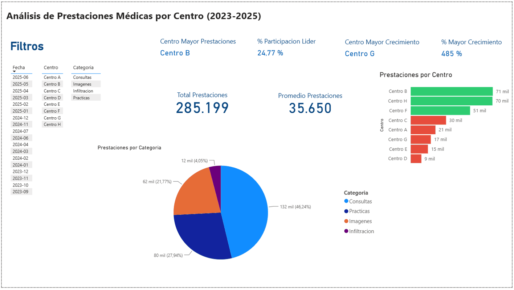

Dashboard de Prestaciones Médicas
285 mil prestaciones de 18 meses, consolidadas en un único panel.
Ver el caso completo

Problema: un centro médico con múltiples sucursales necesitaba visibilidad sobre su actividad mensual (consultas, prácticas, imágenes e infiltraciones) por centro, pero la información vivía dispersa en planillas Excel con datos inconsistentes: nombres de centros y profesionales escritos de formas distintas, espacios y tabulaciones sueltas que rompían cualquier análisis directo.
Qué hice: cargué los datos crudos a SQL para limpiarlos y normalizarlos (formatos de texto inconsistentes, espacios/tabulaciones mal ubicados), y desde ahí conecté Power BI para construir el modelo final.
Insights: el dashboard consolida ~18 meses de actividad (entre sep-2023 y jun-2025) por centro y categoría. Sobre 285 mil prestaciones totales, Centro B concentra la mayor participación (~25%), junto con el Centro H, mientras que Centro G —pese a un volumen menor— muestra el crecimiento relativo más alto (+485%), señal de una sucursal en expansión que antes pasaba desapercibida en las planillas sueltas.
Nota: entre 2024-07 y 2024-11 no se registraron consultas por un corte en el envío de datos desde origen; el salto que se observa en 2024-11 corresponde a la reanudación de los envíos, no a un cambio real de actividad.
Impacto: el equipo dejó de revisar planillas dispersas y ahora cuenta con un panel único, filtrable por fecha/centro/categoría, para monitorear cada sucursal con datos consolidados en vez de estimaciones.
Stack: SQL (limpieza y transformación) · Power BI · DAX
Nota: por confidencialidad, se removió el filtro por profesional y se reemplazaron los nombres reales de los centros por etiquetas genéricas (Centro A, B, C...) para esta muestra. Ambos campos estaban contemplados en el modelo entregado originalmente.